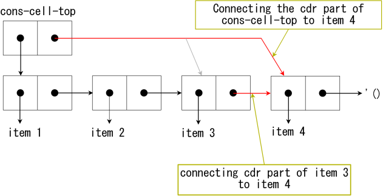

赋值
因为 Scheme 是函数式语言，通常来说，可以编写不使用赋值的语句。 然而，如果使用赋值的话，有些算法就可以轻易实现了，尤其是 内部状态 和 续延 需要赋值
尽管赋值非常常见，并且易于理解，但它有一些本质上的缺陷！！！
R5RS中规定的用于赋值的特殊形式是 set! 、 set-car! 、 set-cdr! 、 string-set! 、 vector-set! 等
由于赋值改变了参数的值，因此它具有破坏性 Scheme中，具有破坏性的方法都以 ! 结尾，以警示程序员
set!
set! 可以为一个参数 赋值 ，赋值前参数应 被定义
(define var 1) (set! var (* var 10)) var ; 10 (let ((i 1)) (set! i (+ i 3)) i) ; 4
与 Common Lisp 不同，set! 无法给一个 S-表达式 赋值
内部状态
静态作用域
Scheme 中 变量的作用域 被 限定 在了 源码中定义其的那个括号里 。 作用域与源代码书写方式一致 的作用域称为 词法闭包 ( Lexical closure ) 或 静态作用域 ( Static scope )。采用静态作用域减轻了程序员的负担，因为它已经在代码中体现了，因此可以很容易理解
另一方面，还有一种被称为“动态作用域 (Dynamic scope)”的作用域，这种作用域仅在程序运行时确定
由于会在调试时带来种种问题，这种作用域现在已经不再使用
特殊形式 let 、 lambda 、 letrec 生成闭包 ：
- lambda 表达式 的参数仅在函数定义内部有效
- let 只是 lambda 的语法糖，因此二者无异
赋值和闭包来实现内部状态
可以使用 词法闭包 来实现 带有内部状态 的 过程
例如，用于模拟银行账户的过程可以按如下的方式编写：
初始资金是10美元
函数接收一个整形参数。正数表示存入，负数表示取出
为了简单起见，这里允许存款为负数
(define bank-account (let ((balance 10)) (lambda (n) (set! balance (+ balance n)) balance)))
该过程将 存款 赋值 为 (+ balance n) 。下面是调用这个过程的结果：
(bank-account 20) ; donating 20 dollars ;; => 30 (bank-account -25) ; withdrawing 25 dollars ;; => 5
因为在Scheme中，可以 编写 返回过程 的过程 ，因此可以编写一个 创建银行账户 的函数：
(define (make-bank-account balance) (lambda (n) (set! balance (+ balance n)) balance))
分别创建两个不同的银行账户，并进行各自的操作：
(define gates-bank-account (make-bank-account 10)) ; Gates makes a bank account by donating 10 dollars (gates-bank-account 50) ; donating 50 dollars ;; 60 (gates-bank-account -55) ; withdrawing 55 dollars ;; 5 (define torvalds-bank-account (make-bank-account 100)) ; Torvalds makes a bank account by donating 100 dollars (torvalds-bank-account -70) ; withdrawing 70 dollars ;; 30 (torvalds-bank-account 300) ; donating 300 dollars ;; 330
这个例子喻示着使用函数式程序设计语言可以很容易实现面向对象程序设计语言
实际上，只需要在这个基础上再加一点东西就可以实现一门面向对象程序设计语言了
副作用
Scheme过程的主要目的是：
- 返回一个 值
- 副作用 ( Side Effect )： 赋值 和 IO操作 就是副作用
表的破坏性操作
- set-car! : 为一个 cons单元 的 car部分 赋新值
- set-cdr! : 为一个 cons单元 的 cdr部分 赋新值
(define tree '((1 2) (3 4 5) (6 7 8 9))) (set-car! (car tree) 100) ; changing 1 to 100 tree ; => ((100 2) (3 4 5) (6 7 8 9)) (set-cdr! (third tree) '(a b c)) ; changing '(7 8 9) to '(a b c) tree ; => ((100 2) (3 4 5) (6 a b c))
和 set! 不同，这两个操作可以为 S-表达式 赋值
队列
队列 可以用 set-car! 和 set-cdr! 实现。队列是一种 先进先出 的数据结构，下图展示了队列的结构：
- cons-cell-top 的 car 部分指向 表头的cons单元
cons-cell-top 的 cdr 部分指向 表末的cons单元

入队 操作按如下步骤进行：
- 将 当前最末的cons单元 （通过 cons-cell-top 取得）的 cdr部分 重定向到 新的元素
将 cons-cell-top 的 cdr部分 重定向到 新的元素

出队 操作按如下步骤进行：
- 将 队首元素 存放在一个 局部变量 里
将 cons-cell-top 的 car部分 重定向到 表的第二个元素

下面代码展示了如何实现队列：
- enqueue! : 返回将元素 obj 添加进队列 queue 后的队列
- dequeue! : 将 队列的首元素 移出队列，将 该元素的值 作为返回值
(define (make-queue) (cons '() '())) (define (enqueue! queue obj) (let ((lobj (cons obj '()))) (if (null? (car queue)) (begin (set-car! queue lobj) (set-cdr! queue lobj)) (begin (set-cdr! (cdr queue) lobj) (set-cdr! queue lobj))) (car queue))) (define (dequeue! queue) (let ((obj (car (car queue)))) (set-car! queue (cdr (car queue))) obj))
测试队列：
(define q (make-queue)) q ; (()) (enqueue! q 'a) ; (a) (enqueue! q 'b) ; (a b) (enqueue! q 'c) ; (a b c) (dequeue! q) ; a q ; ((b c) c)
队列是先进先出的
表/栈是先进后出的